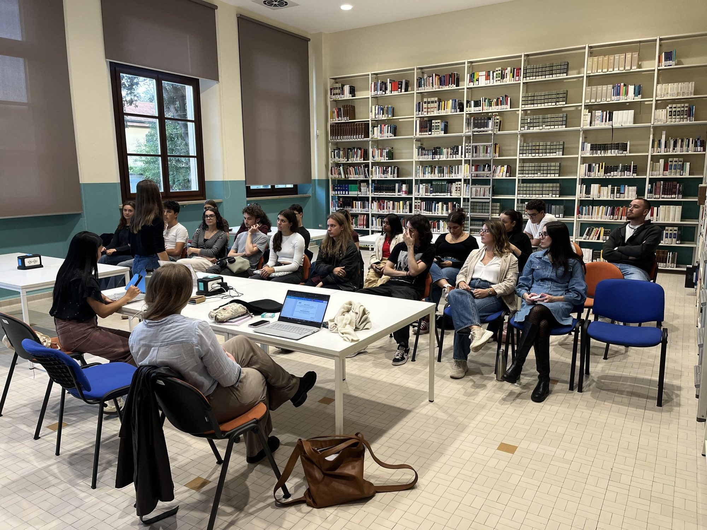

I · MUN Club
Where every delegate starts
Our weekly training in diplomacy, run by the Academics committee: research international topics, learn the Rules of Procedure, write position papers, practise speeches and negotiation. The programme culminates in a final simulation on the Forlì Campus. No experience needed.
- Every Thursday
- 15:00 – 17:00
- Room Dewey 999, Ruffilli Library
- Free